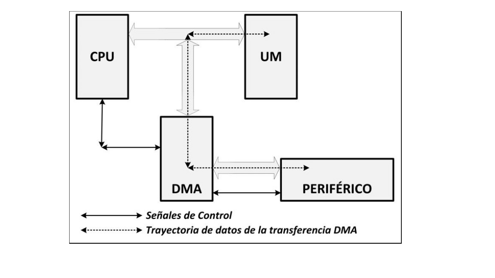

Tarjetas Gráficas
Una tarjeta gráfica es una tarjeta de expansión de la placa base del ordenador que se encarga de procesar los datos provenientes de la unidad central de procesamiento (CPU) y transformarlos en información comprensible y representable en el dispositivo de salida (por ejemplo: monitor, televisor o proyector). Esta placa puede contar con una unidad de procesamiento gráfico GPU. Actualmente todas las placas de video cuentan con una. Esta es la encargada de procesar las imágenes, realizar operaciones para las formas geométricas 2D o 3D, para luego representarlas sobre el dispositivo de salida.
GPU
Cabe aclarar que estas GPU son equiparables a una computadoras, contando con unidades de cálculo, un bus, espacio de direcciones y unidades computacionales así como una memoria de uso propio.
Funcionamiento
Al estar exclusivamente dedicado al procesamiento gráfico libera al CPU de realizar los cálculos y operaciones correspondientes para dibujar formas geométricas requeridas y libera de la carga de ejecución al CPU y este puede dedicarse a otro tipo de cálculos requeridos por el software. A diferencia de los procesadores centrales, diseñados con pocos núcleos pero altas frecuencias de reloj, las GPU suelen tener grandes cantidades de núcleos de procesamiento a frecuencias de reloj relativamente bajas. En la actualidad, la mayoría de los núcleos de procesamiento están dirigidos a dos funciones: procesamiento de vértices y de píxeles.
Gráficos
El procesamiento de vértices es relativamente sencillo para las unidades de procesamiento gráfico modernas, siendo de los que menos recursos consumen. En términos sencillos se trata de obtener la información de los vértices, previamente calculada por el CPU, y procesar su ordenamiento espacial, rotación, y qué segmento del vértice será gráficamente visible, para así continuar con el pixelado. A continuación se procede a procesar los pixeles, o en otras palabras, los gráficos observables como tal. Éste es el proceso más complejo y que requiere más carga de procesamiento, pues se aplicarán todas las capas y efectos necesarios para crear texturas complejas y obtener gráficos lo más realistas posibles. Por último, una vez procesada la información gráfica, esta es llevada a un monitor digital o analógico (en este último caso, previo paso por un convertidor), según las necesidades propias del ordenador.
¿A qué están dedicadas?
Actualmente, dada la gran capacidad de procesamiento paralelo que están alcanzando las GPU, están empezando a usarse en otros ámbitos más allá del procesamiento de gráficos. Tanto NVIDIA (CUDA) como ATI (ATI Stream) han desarrollado el GPGPU (GPGPU o General-Purpose Computing on Graphics Processing Units), mecanismo mediante el cual se permite aprovechar las capacidades de cómputo de la GPU para otros fines como el cálculo de fluidos, análisis sísmicos, cálculos científicos, ingeniería, criptografía, biología, etc.
Interfaz con la Placa Base
PCI: bus que desplazó a los anteriores, a partir de 1993; con un tamaño de 32 bits y una velocidad de 33 MHz, permitía una configuración dinámica de los dispositivos conectados sin necesidad de ajustar manualmente los jumpers. PCI-X fue una versión que aumentó el tamaño del bus hasta 64 bits y aumentó su velocidad hasta los 133 MHz. AGP: bus dedicado, de 32 bits como PCI; en 1997, la versión inicial incrementaba la velocidad hasta los 66 MHz. PCI-Express (PCIe): desde 2004, es la interfaz serie que empezó a competir contra AGP; en 2006, llegó a doblar el ancho de banda del AGP. Sufre de constantes revisiones multiplicando su ancho de banda, ya existe la versión 3.0. No debe confundirse con PCI-X, versión de PCI
Interfaces de salida
HDMI (High Definition Multimedia Interface). Transmite audio y vídeo de alta definición en formato digital. DisplayPort. Rival de HDMI. Al igual que este, transmite audio y vídeo de alta definición en formato digital. Está libre de patentes. Su uso es mucho menor que el HDMI. Cuenta con una versión reducida (Mini DisplayPort) en la cual está basado el puerto Thunderbolt de Apple.
RAMDAC
El RAMDAC es un conversor de señal digital a analógico de memoria RAM. Se encarga de transformar las señales digitales producidas en el ordenador en una señal analógica que sea interpretable por el monitor. Según el número de bits que maneje a la vez y la velocidad con que lo haga, el conversor será capaz de dar soporte a diferentes velocidades de refresco del monitor (se recomienda trabajar a partir de 75 Hz, nunca con menos de 60). Dada la creciente popularidad de los monitores digitales el RAMDAC está quedando obsoleto, puesto que no es necesaria la conversión analógica si bien es cierto que muchos conservan conexión VGA por compatibilidad. (Digamos que el ramdac, es el encargado de pasar una señal digital (modo en que trabaja la VGA) a señal analogica (pantalla), para visualizar los algoritmos de renderización creados por esta.)
API
La interfaz de programación de aplicaciones, conocida también por la sigla API, en inglés, application programming interface,1 es un conjunto de subrutinas, funciones y procedimientos (o métodos, en la programación orientada a objetos) que ofrece cierta biblioteca para ser utilizado por otro software como una capa de abstracción Son usadas generalmente en las bibliotecas de programación Una API representa la capacidad de comunicación entre componentes de software. Se trata del conjunto de llamadas a ciertas bibliotecas que ofrecen acceso a ciertos servicios desde los procesos y representa un método para conseguir abstracción en la programación, generalmente (aunque no necesariamente) entre los niveles o capas inferiores y los superiores del software. Uno de los principales propósitos de una API consiste en proporcionar un conjunto de funciones de uso general, por ejemplo, para dibujar ventanas o iconos en la pantalla. De esta forma, los programadores se benefician de las ventajas del API haciendo uso de su funcionalidad, evitándose el trabajo de programar todo desde el principio. Las API asimismo son abstractas: el software que proporciona una cierta API generalmente es llamado la implementación de esa API.
Diferentes tipos de API
A nivel de programador, trabajar con una tarjeta gráfica es complicado; por ello, surgieron interfaces de programación de aplicaciones (API) que abstraen la complejidad y diversidad de las tarjetas gráficas. Los dos más importantes son: Direct3D: lanzada por Microsoft en 1996, forma parte de la librería DirectX. Funciona sólo para Windows, ya que es privativa. Utilizado por la mayoría de los videojuegos comercializados para Windows. Actualmente van por la versión 12. OpenGL: creada por Silicon Graphics a principios de los años 1990; es gratuita, libre y multiplataforma. Utilizada principalmente en aplicaciones de CAD, realidad virtual o simulación de vuelo. Actualmente está disponible la versión 4.3. Además, los dispositivos tienen asociados también una colección de recursos (resources) o datos concretos necesarios para realizar la renderización. OpenGL (Open Graphics Library) es una especificación estándar que define una API multilenguaje y multiplataforma para escribir aplicaciones que produzcan gráficos 2D y 3D. La interfaz consiste en más de 250 funciones diferentes que pueden usarse para dibujar escenas tridimensionales complejas a partir de primitivas geométricas simples, tales como puntos, líneas y triángulos. Fue desarrollada originalmente por Silicon Graphics Inc. (SGI) en 19922 y se usa ampliamente en CAD, realidad virtual, representación científica, visualización de información y simulación de vuelo. También se usa en desarrollo de videojuegos, donde compite con Direct3D en plataformas Microsoft Windows.
Controladores
La tarjeta gráfica o tarjeta de video es el elemento que define cómo serán mostradas las imágenes en la pantalla de un PC. El funcionamiento de la tarjeta de video consiste en procesar la información recibida de la CPU y transformarla en imágenes para que sean mostradas en la pantalla. Las tarjetas de video Nvidia acostumbran tener una memoria dedicada y un procesador propio. Al hablar de elementos de hardware que componen el PC, conviene recordar que la tarjeta gráfica necesita de drivers dedicados, sin los cuales es imposible que funcione correctamente. Para obtener el máximo rendimiento de una tarjeta de video es esencial mantener sus drivers actualizados. Un driver es un programa que comunica el sistema operativo con la tarjeta gráfica. Los drivers de las tarjetas de video Nvidia acostumbran venir junto con las propias tarjetas. Sin embargo, incluso en un PC nuevo, la tarjeta gráfica puede venir con drivers desactualizados. Eso sucede porque la Nvidia publica una nueva versión entre la distribución de la tarjeta gráfica y su compra. Por eso, al llegar a sus manos, si la Nvidia ya publicó actualizaciones, los drivers de la tarjeta gráfica pueden ser considerados antiguos o desactualizados.
¿Cómo interactúa el software con la Placa Gráfica?
Cabe destacar que necesitamos de drivers específicos para sacar el máximo provecho de una tarjeta gráfica. En el caso de nuestra investigación es la interacción que hace el CPU con el GPU. Primero tenemos que saber como es el proceso de inicialización de las tarjetas gráficas. En este caso es: ¿Qué ocurre cuando iniciamos la PC y lo primero que se despliega? En este caso pasa a jugar un papel fundamental la BIOS (Basic Input Output System) de la PC. Ésta hace una comunicación básica con la GPU. El tipo de comunicación que desarrolla es la antigua VGA (Vídeo Graphics Array). Esto le permite al sistema desplegar lo primero en pantalla, al igual que desplegar el menú de configuración de la misma BIOS. Para que todo esto suceda el GPU debe soportar el formato viejo de video VGA. Entonces después el Sistema Operativo se encarga de comenzar su carga. Esto no quiere decir que la GPU esté funcionando a su máximo nivel. Todavía no existen drivers cargados y éste se mostrará en un modo de pantalla muy básico. Con lo cual no tenemos las funciones de aceleración, pero deja ver una gráfica básica para que podamos cargarle nuestros propios drivers ó si el Sistema Operativo ya tiene los suyos propios específicos mostrará en pantalla la aceleración completa. En lo que resta de esta investigación es explicar como hace el Sistema Operativo en arquitecturas x86 y x64 para que el sistema operativo pueda comunicarse de la forma más eficiente posible con la GPU.
Driver de un Dispositivo
Lo primero a tener en cuenta en el desarrollo de un driver son las capas de abstracción de dicha máquina (sea ya Intel, ARM, etc). El Sistema operativo, que es el responsable con su Kernel (Núcleo) gestionar el hardware en la máquina: Memoria para programas y Sistemas de E/S. Aquí estamos en la capa más “baja”. Es decir, el núcleo se encarga de gestionar todo lo de bajo nivel para ofrecerle al programador una interfaz lo más sencilla posible para interactuar con los diferentes dispositivos que se encuentren en el sistema.
Operaciones de entrada/salida:
Para que un computador pueda ejecutar un programa debe ser ubicado previamente en la memoria, junto con los datos sobre los que opera, y para ello debe existir una unidad funcional de entrada de información capaz de escribir en la memoria desde el exterior. Análogamente, para conocer los resultados de la ejecución de los programas, los usuarios deberán poder leer el contenido de la memoria a través de otra unidad de salida de datos. La unidad de Entrada/Salida (E/S) soporta estas funciones, realizando las comunicaciones del computador (memoria) con el mundo exterior (periféricos). existen una serie de funciones básicas comunes a todo dispositivo de E/S: Identificación única del dispositivo por parte de la CPU Capacidad de envío y recepción de datos Sincronización de la transmisión, exigida por la diferencia de velocidad de los dispositivos de E/S con la CPU La identificación del dispositivo se realiza con un decodificador de direcciones. El envío y la recepción de datos tiene lugar a través de registros de entrada y salida de datos. Los circuitos de sincronización se manipulan por medio de registros de estado y control Las tres funciones básicas se pueden realizar a través del bus del sistema que conecta la memoria y la CPU, o bien se puede utilizar un bus específico para las operaciones de E/S.
Estructura del sistema de E/S:
Módulos de e/s y controladores de dispositivos Las diferencias existentes entre los dispositivos periféricos han hecho que la unidad de E/S de un computador se organice en torno a dos tipos de elementos, unos que soportan las características comunes a todos los dispositivos (módulos de E/S) y otros específicos para cada periférico que son los controladores de dispositivo.
Un módulo de E/S permite que el procesador gestiona una amplia gama de dispositivos periféricos de una forma similar, ocultando los detalles concretos de temporización, formatos de datos y principios físicos de funcionamiento. El módulo de E/S se conecta con el procesador a través de un conjunto de líneas de datos, dirección y control (un bus). Los datos que se transfieren se almacenan temporalmente en un registro de datos. El estado del módulo se refleja en los bits de un registro de estado. El registro de control permite configurar y programar diferentes funciones en el módulo. Estos dos registros (estado y control) pueden unificarse en uno sólo en módulos simples. Un módulo de E/S dispone de la lógica específica para su conexión con uno o más dispositivos periféricos.
Controlador de dispositivo (periférico) La estructura del controlador de un dispositivo tendrá que adaptarse en cada caso a las peculiaridades específicas del periférico.
La conexión con el módulo de E/S se realiza a través de señales de control, estado y datos. Es la parte del controlador que homologa su comportamiento singular al esquema general de gestión de la E/S. Las señales de control determinan la función que debe realizar el dispositivo. La lógica de control asociada al dispositivo controla su operación en respuesta a las indicaciones del módulo de E/S. El transductor convierte las señales eléctricas asociadas a los datos a otra forma de energía. Además, suele existir un buffer asociado al transductor para almacenar temporalmente el dato que se transfiere entre el módulo de E/S y el dispositivo.
Comunicación entre el módulo de E/S y el controlador de dispositivo periférico
Al diseñar un controlador de gráficos Linux con el objetivo de algo más que un simple soporte de framebuffer puerto, un componente DRM es lo primero que debe hacer. Uno debe derivar un diseño que sea a la vez eficiente y refuerza la seguridad. El esquema DRI / DRM se puede implementar en diferentes formas y la interfaz es de hecho totalmente específica de la tarjeta.
PROGRAMACIÓN DE LA GPU
MMIO
MMIO es el acceso más directo a la tarjeta. Un rango de direcciones está expuesto a la CPU, donde cada escritura va directamente a la GPU. Esto permite la comunicación más sencilla entre comandos de la CPU a la GPU. Este tipo de programación es sincrónica; las escrituras son realizadas por la CPU y ejecutadas en la GPU en forma sincronizada. Esto lleva rendimiento por debajo de la media porque cada acceso se convierte en un paquete en el bus y porque la CPU tiene que esperar a que se completen los comandos anteriores de la GPU antes de enviar comandos secuenciales. Por esta razón, MMIO solo se utiliza en los caminos de los conductores de hoy.
DMA
Un acceso directo a memoria (DMA) es el uso por parte de un periférico de la función de masterización de bus del bus. Esto permite que un periférico hable directamente con otro, sin intervención. desde la CPU. En el caso de la tarjeta gráfica, los dos usos más comunes de los DMA son:
-
Transferencias de la GPU hacia y desde la memoria del sistema (para leer texturas y escribir tampones de ing). Esto permite implementar cosas como texturizar sobre AGP o PCI, y transferencias de texturas aceleradas por hardware.
-
La implementación del comando FIFO.
A continuación se muestra de forma ilustrativa como trabaja el DMA:
